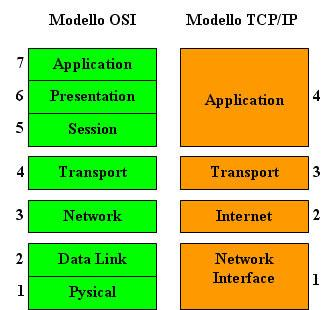

vera storia di internet
1969, progettazione della rete militare statunitense Arpanet.
La nascita di INTERNET risale al 1969, quando il governo
degli Stati Uniti fece progettare una rete militare finalizzata
allo scambio di informazioni veloce e sicuro, che fosse in
grado di connettere sistemi diversi e distanti fra loro e che
fosse capace di funzionare anche con più nodi guasti o
distrutti. Questa rete, sviluppata da un'agenzia del
Dipartimento della Difesa denominata ARPA (Advanced
Research project Agency) fu chiamata ARPANET. Essa era
in grado di funzionare anche dopo un disastro nucleare,
essendo costituita da moduli che mettevano un computer in
grado di comunicare con un altro seguendo stade diverse:
quando una strada risulta ostacolata i messaggi seguono strade alternative (instradamento delle
informazioni, routing). L'aspetto più importante era il modo con il quale un computer comunicava
con un altro. Di questo si occupa il protocollo IP (Internet Protocol), un protocollo che garantisce la
comunicazione anche tra computer diversi e con sistemi operativi diversi. Questa rimane una delle
caratteristiche fondamentali di INTERNET.

1972, posta elettronica (e-mail), collegamento remoto e
trasferimento file (FTP)
Nel 1972 già veniva utilizzata la posta elettronica (e-mail) il
collegamento remoto (Remote Login) e il trasferimento di file FTP
(File Transfer Protocol), servizi oggi dispobnibili in INTERNET.
1974, protocolli IP e TCP
Nel 1974 vennero ufficialmente presentati i protocolli IP (Internet
Protocol) e TCP (Transmission Control Protocol).

1979, nascita di CSNet, rete che collega le università statunitensi
Nel 1979 nacque la CSNet (Computer Science Research Network), una
rete progettata dai ricercatori di informatica e destinata a connettere le
varie università americane.
1980, collegamento di Arpane e CSNet, vera nascita di Internet
Nel 1980 nacque INTERNET come interconnessione tra ARPANET e CSNet
tramite un gateway basato sui protocolli TCP/IP.
1990, la rete NSFNet che collega supercomputer soppianta Arpanet
Una evoluzione nella crescita di Internet si ebbe con NSFNet (National
Science Foundation Network) che collegava diversi supercomputer ciascuno
dei quali fungeva da server per altrettante reti locali e connessi tra di loro
tramite linee telefoniche. Ciascun supercomputer era poi connesso, sempre
mediante linee telefoniche, ad altri computer e centri di calcolo regionali. In
tal modo ciascun computer poteva comunicare con un qualsiasi altro
computer della rete. Nel 1990 NSFNet soppiantò definitivamente ARPANET e questo aprì la strada
all'utilizzazione commerciale e civile della rete. Cominciarono a svilupparsi le backbone (spina
dorsale), le dorsali, cioè le reti principali ad alta velocità - collegate tra di loro non da linee
telefoniche, ma da linee ad alta velocità ciascuna delle quali poi collegava, mediante linee
telefoniche, le reti locali. Le velocità dei collegamenti di Internet sono così molto diverse: si va
dalle poche decine di Kbps (migliaia di bit per secondo) dei modem domestici ai 45 Mbps (milioni
di bit per secondo) di NSFNet.

1990, realizzazione, al CERN di Ginevra, del linguaggio HTML
Nel 1990 al CERN (Centro Europeo per la Ricerca Nucleare di Ginevra)
alcuni ricercatori informatici Tim Bernes Lee in primo luogo incaricati di
realizzare un sistema per la condivisione tra utenti diversi di dati sia testuali
che non testuali (immagini, suoni, filmati), basandosi sul concetto di ipertesto, hanno dato origine al
linguaggio HTML (Hyper Text Markup Language) che consente, oltre che a gestire informazioni di
diversa natura (testuali e multimediali), anche di collegare diversi documenti tra di loro mediante
opportuni link. Questo linguaggio è divenuto lo strumento più potente per distribuire informazioni
in Internet ed ha introdotto quella architettura denominata WWW (World Wide Web), la "ragnatela
di dimensioni mondiali" che consente la navigazione, cioè la consultazione semplice e veloce degli
archivi e dei documenti presenti nei computer della rete.

1993, realizzazione di Mosaic, il primo browser della rete
Nel 1993 il NCSA (Centro nazionale statunitense per il
supercalcolo) realizzò Mosaic, il primo browser per WWW ed il
primo sito a cui connettersi (un "sito" è un computer che mette a
disposizione degli utenti della rete informazioni organizzate e al
quale ci si può connettere per la consultazione). Attualmente i
browser più diffusi sono Netscape ed Explorer di Microsoft e la comunicazione tende sempre più a
passare dalla semplice consultazione ad un tipo di comunicazione interattiva, e questo grazie
all'utilizzazione di linguaggi quali Java e ActiveX.

1994, realizzazione di Yahoo!, il primo motore di ricerca
Nel 1994 David Filo e Jerry Yang diedero vita a Yahoo!, il primo Motore di
ricerca. Nello stesso anno arrivò il primo motore di ricerca full text di Internet,
Webcrawler, quindi arrivarono Lycos e poi InfoSeek. Alla fine del 1995 arrivò
Altavista, nel 1996 HotBot e nel 1998 Google.